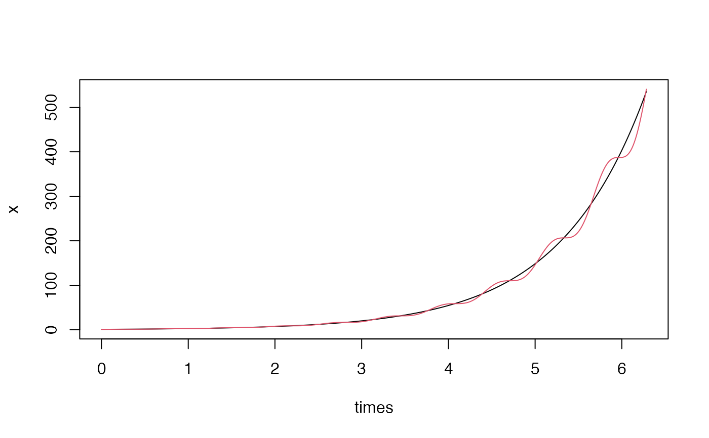
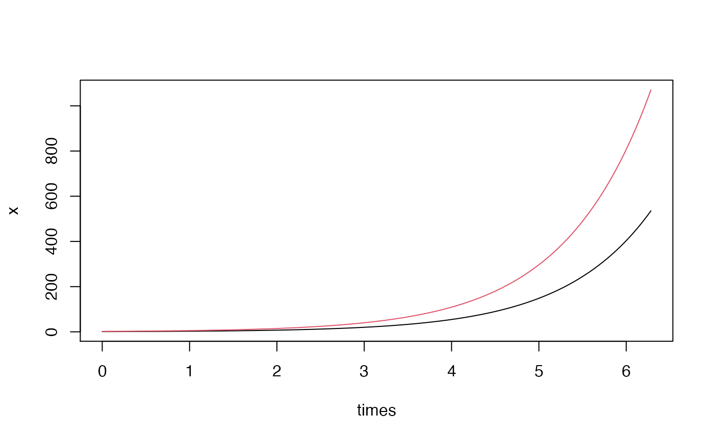
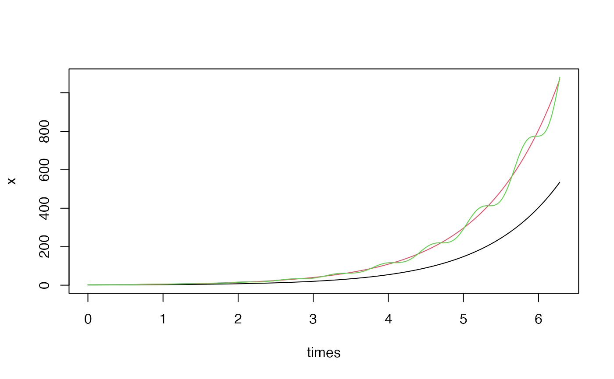

Solves a numerical or symbolic system of ordinary differential equations.
ode( f, var, times, timevar = NULL, params = list(), method = "rk4", drop = FALSE )
| f | vector of |
|---|---|
| var | vector giving the initial conditions. See examples. |
| times | discretization sequence, the first value represents the initial time. |
| timevar | the time variable used by |
| params |
|
| method | the solver to use. One of |
| drop | if |
Vector of final solutions if drop=TRUE, otherwise a matrix with as many
rows as elements in times and as many columns as elements in var.
Other integrals:
integral()
## ================================================== ## Example: symbolic system ## System: dx = x dt ## Initial: x0 = 1 ## ================================================== f <- "x" var <- c(x=1) times <- seq(0, 2*pi, by=0.001) x <- ode(f, var, times) plot(times, x, type = "l")## ================================================== ## Example: time dependent system ## System: dx = cos(t) dt ## Initial: x0 = 0 ## ================================================== f <- "cos(t)" var <- c(x=0) times <- seq(0, 2*pi, by=0.001) x <- ode(f, var, times, timevar = "t") plot(times, x, type = "l")## ================================================== ## Example: multivariate time dependent system ## System: dx = x dt ## dy = x*(1+cos(10*t)) dt ## Initial: x0 = 1 ## y0 = 1 ## ================================================== f <- c("x", "x*(1+cos(10*t))") var <- c(x=1, y=1) times <- seq(0, 2*pi, by=0.001) x <- ode(f, var, times, timevar = "t") matplot(times, x, type = "l", lty = 1, col = 1:2)## ================================================== ## Example: numerical system ## System: dx = x dt ## dy = y dt ## Initial: x0 = 1 ## y0 = 2 ## ================================================== f <- function(x, y) c(x, y) var <- c(x=1, y=2) times <- seq(0, 2*pi, by=0.001) x <- ode(f, var, times) matplot(times, x, type = "l", lty = 1, col = 1:2)## ================================================== ## Example: vectorized interface ## System: dx = x dt ## dy = y dt ## dz = y*(1+cos(10*t)) dt ## Initial: x0 = 1 ## y0 = 2 ## z0 = 2 ## ================================================== f <- function(x, t) c(x[1], x[2], x[2]*(1+cos(10*t))) var <- c(1,2,2) times <- seq(0, 2*pi, by=0.001) x <- ode(f, var, times, timevar = "t") matplot(times, x, type = "l", lty = 1, col = 1:3)